Examples
Screenshots of examples with continuative expressions.
1. Eurasia
Indo-European (> Italic)
Spanish (Butt et al. 2019: 446)
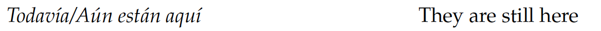
The continuative marker: todavía.
Spanish (Butt et al. 2019: 446)

The continuative marker: aún.
Spanish (Butt et al. 2019: 457)

The continuative marker: seguir.
Spanish (Butt et al. 2019: 457)
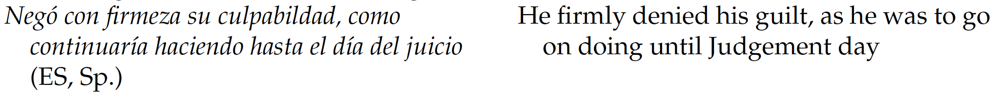
The continuative marker: continuar.
Indo-European (> Eastern Baltic)
Lithuanian (Arkadiev 2011: 61)
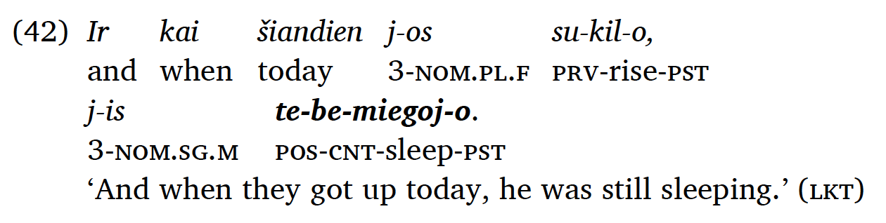
The continuative marker: tebe-.
Lithuanian (Corpus of Contemporary Lithuanian, pp. no page)
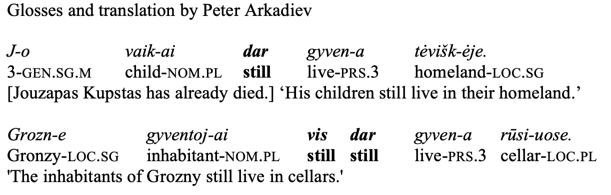
The continuative marker: (vis) dar.
Sino-Tibetan
Mandarin Chinese (Ross & Ma 2017: 88)

The continuative marker: hái.
Mandarin Chinese (Ross & Ma 2017: 120)
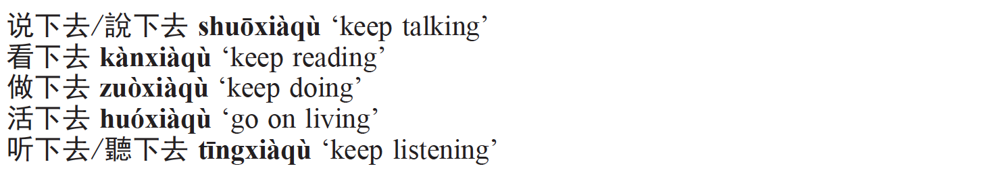
The continuative marker: xiàqù.
Mandarin Chinese (Li & Thompson 1989: 178)
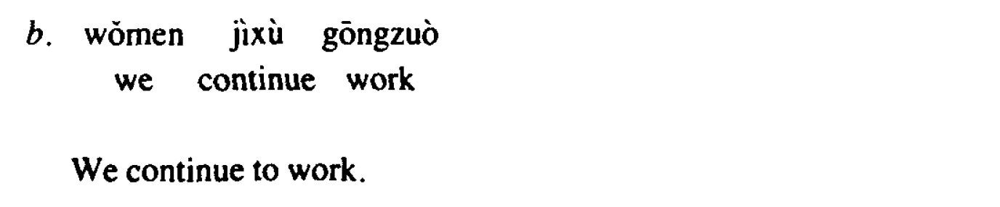
The continuative marker: jìxù.
Tai-Kadai
Thai (Iwasaki & Ingkaphirom 2005: 158)
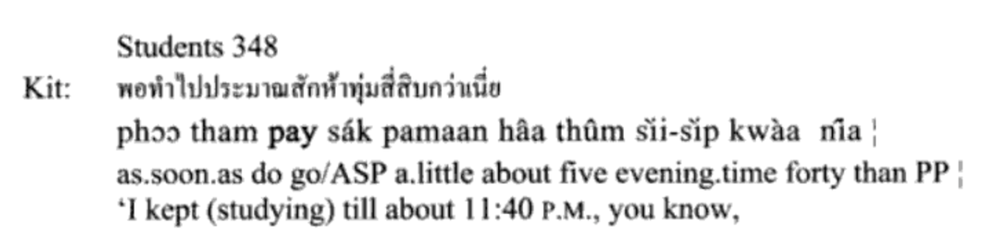
The continuative marker: pay.
Thai (Higbie & Thinsan 2002: 105)
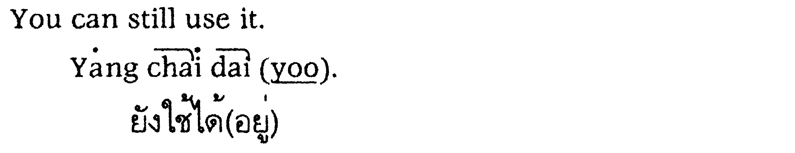
The continuative marker: yang.
Nakh-Daghestanian
Lezgian (Haspelmath 1993: 145)
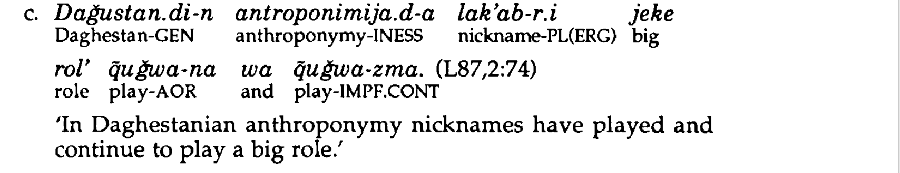
The continuative marker: -zma/-nma.
Lezgian (Haspelmath 1993: 210)
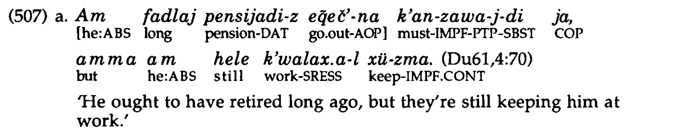
The continuative marker: hele.
Abkhaz-Adyge
Abaza (Tabulova 1976: 256)
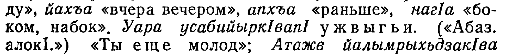
The continuative marker: wẑəg’əj.
Abaza (Klyagina & Panova 2019: 10)
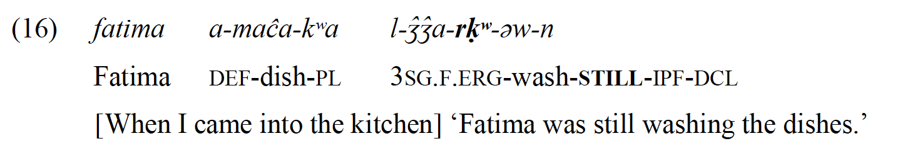
The continuative marker: -rḳʷ(a).
Koreanic
Korean (Sohn 1994: 103)
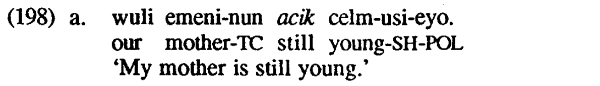
The continuative marker: acik.
Korean (Sohn 1994: 332)

The continuative marker: -keli / -tay.

2. Africa
Atlantic-Congo (> North-Central Atlantic)
Balanta-Ganja (Creissels & Biaye 2016: 201)
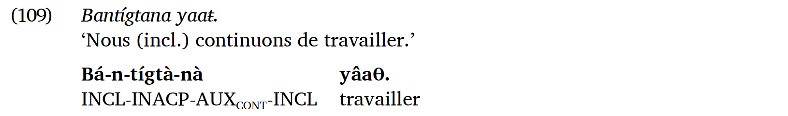
The continuative marker: tígtà.
Atlantic-Congo (> Volta-Congo > North Volta-Congo)
Sango (Samarin 1970: 105)
The continuative marker: ngba.
Sango (Nassenstein & Pasch 2016: 114)
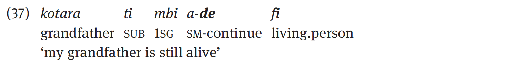
The continuative marker: de.
Atlantic-Congo (> Volta-Congo > Gur)
Northern Dagara (Mwinlaaru 2017: 328)
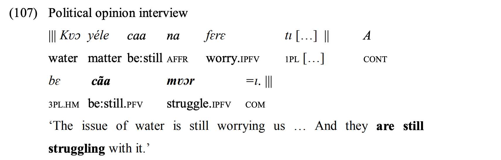
The continuative marker: cãa.
Atlantic-Congo (> Volta-Congo > East Bantu > Corridor Bantu)
Nyakyusa-Ngonde (Persohn 2017: 186)
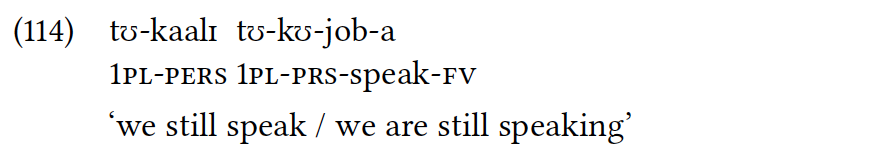
The continuative marker: kaalɪ.
Atlantic-Congo (> Volta-Congo > East Bantu > Southern Bantu-Makua)
Zulu (Ziervogel et al. 1976: 91)

The continuative marker: sa-.
Atlantic-Congo (> Volta-Congo > Central-Western Bantu)
Yansi (Mayanga 1985: 111)
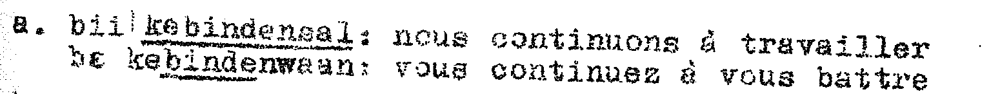
The continuative marker: -binde-.
Afro-Asiatic (> Semitic)
North Levantine Arabic (Versteegh 2018: 246)
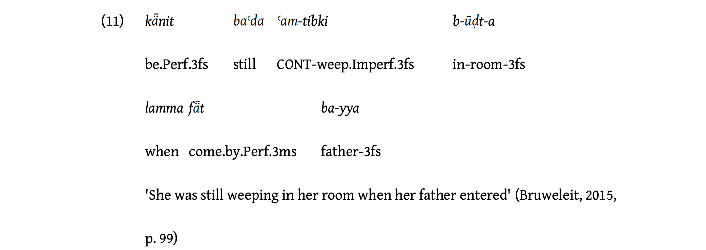
The continuative marker: baʿda.
Afro-Asiatic (> Berber)
Ghomara (Mourigh 2015: 370)
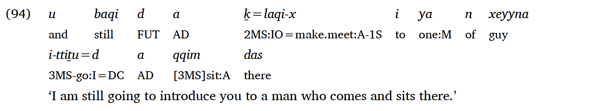
The continuative marker: baqi / baqqa / baqin.
Afro-Asiatic (> Egyptian)
Coptic (Layton 2004: 384)
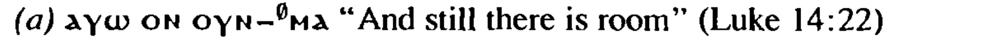
The continuative marker: on.
Coptic (Elanskaya 2010: 424)
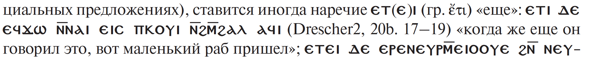
The continuative marker: еti.
Mande
Gban (Fedotov 2015: 4)
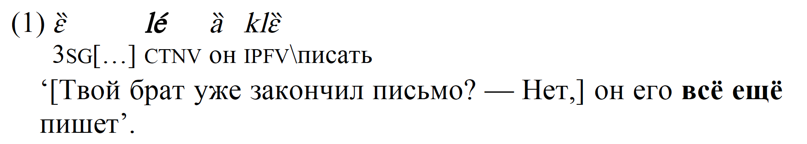
The continuative marker: lé‶.
Gban (Fedotov 2015: 5)

The continuative marker: gɔ ̰ .
Central Sudanic
Ma’di (Blackings & Fabb 2003: 247)
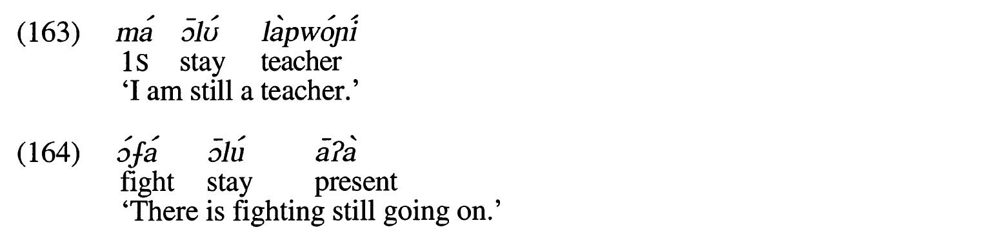
The continuative marker: ɔlʊ.
Ma’di (Blackings & Fabb 2003: 495)
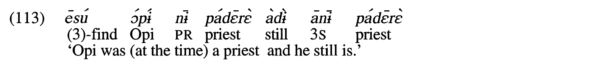
The continuative marker: adɨ.
3. North America
Otomanguean (> Eastern Otomanguean)
Isthmus Zapotec (Pickett et al. 2001: 80)
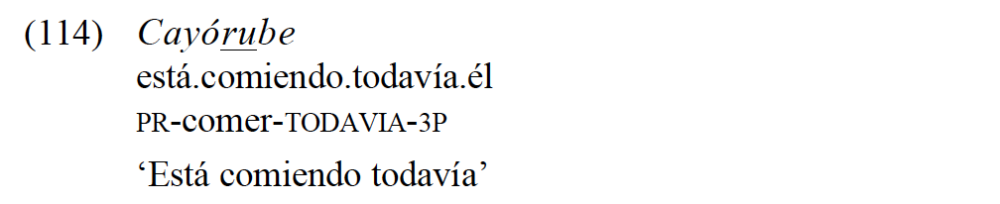
The continuative marker: ru.
Isthmus Zapotec (Pickett 2007: 97)
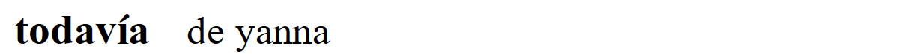
The continuative marker: de_yanna.
Otomanguean (> Western Otomanguean)
Querétaro Otomi (Palancar 2009: 363)
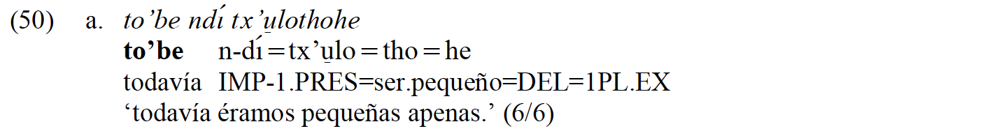
The continuative marker: to’be.
Athabaskan-Eyak-Tlingit (> Athabaskan)
Navajo (Young & Morgan 1987: 13)
The continuative marker: t’ahdii.
Navajo (Young & Morgan 1987: 13)
The continuative marker: t’ah.
Mayan
Yucatec Maya (Bohnemeyer 2001: 394)
The continuative marker: láailiʼ …-eʼ.
Yucatec Maya (Bohnemeyer 2001: 350)
The continuative marker: sèegir.
Siouan
Lakota (Ullrich 2018: 277)
The continuative marker: -akhe.
Lakota (Ullrich 2018: 278)
The continuative marker: héčhena.
Eskimo-Aleut
Central Alaskan Yupik (Miyaoka 2012: 1232)
The continuative marker: -gur.
Central Alaskan Yupik (Miyaoka 2012: 922)
The continuative marker: cali.

Muskogean
Creek (Martin 2011: 306)
The continuative marker: -i: (i)mônk-.
Creek (Martin 2011: 150)

The continuative marker: hatí.
4. South America
Tupian
Paraguayan Guaraní (Gerasimov 2020: 2)
The continuative marker: -ve.
Paraguayan Guaraní (Estigarribia 2020: 234)
The continuative marker: gueteri.
Pano-Tacanan
Ese Ejja (Vuillermet 2012: 478)
The continuative marker: -poki/ -pokya.
Ese Ejja (Vuillermet 2012: 543)
The continuative marker: -so’o.
Nuclear-Macro-Je
Xavánte (Machado Estevam 2011: 291)
The continuative marker: -uösi.
Xavánte (Machado Estevam 2011: 107)
The continuative marker: (za)hadu.
Matacoan
Nivaclé (Fabre 2016: 365)
The continuative marker: jôjje-clai.
Nivaclé (Fabre 2016: 360)
The continuative marker: manlhe-e-sh.
Nambiquaran
Mamaindé (Eberhard 2009: 359)
The continuative marker: naih.
Mamaindé (Eberhard 2009: 407)
The continuative marker: -jãʔ (-ja / -ʔai / -jaʔna).
Chonan
Tehuelche (Fernández Garay 1998: 143)
The continuative marker: -r.
Tehuelche (Fernández Garay 1998: 295)
The continuative marker: keTš ~ keTx.
Araucanian
Mapudungun (Smeets 2008: 170)
The continuative marker: pet´u.
Mapudungun (Smeets 2008: 172)
The continuative marker: -ka.
5. Australia
Pama-Nyungan (> Desert Nyungic)
Ngarinman (Meakins & Nordlinger 2014: 387)
The continuative marker: =rni.
Pama-Nyungan (> Southeastern Pama-Nyungan)
Ngiyambaa (Donaldson 1977: 354)
The continuative marker: guwayu-bu.
Pama-Nyungan (> South-West Pama-Nyungan)
Martuthunira (Dench 1995: 130)

The continuative marker: waruu / waruul.
Martuthunira (Dench 1995: 283)
The continuative marker: parilha.
Worrorran
Worrorra (Clendon 2014: 238)
The continuative marker: wali.
Worrorra (Clendon 2014: 268)
The continuative marker: weni-nyine.
Worrorra (Clendon 2014: 269)
The continuative marker: -aanjanu.
Mirndi
Wambayan (Nordlinger 1998: 178)
The continuative marker: mirra.
Wambayan (Nordlinger 1998: 206)
The continuative marker: =nima.
Iwaidjan Proper
Mawng (Singer 2006: 342)
The continuative marker: akut.
Mawng (Singer 2006: 89)
The continuative marker: angkat.

Tangkic
Kayardild (Evans 1995: 391)
The continuative marker: =(i)da.
Kayardild (Evans 1995: 321)

The continuative marker: wirdija.
Bunaban
Gooniyandi (McGregor 1990: 464)
The continuative marker: =nyali.
Gooniyandi (McGregor 1990: 511)
The continuative marker: wamba.
Northern Daly
Mullukmulluk (Birk 1976: 32)
The continuative marker: way.
Mullukmulluk (Birk 1976: 32)
The continuative marker: tYin-taŋ-way.
6. Papunesia
Austronesian (> Malayo-Polynesian > Celebic)
Tukang Besi North (Donohue 1999: 174)
The continuative marker: -ho.
Austronesian (> Malayo-Polynesian)
Chamorro (Chung 2020: 406)
The continuative marker: trabiha.
Chamorro (Chung 2020: 344)

The continuative marker: ha’.
Austronesian (> Malayo-Sumbawan)
Standard Indonesian (Sneddon et al. 2010: 206)
The continuative marker: masih.
Austronesian (> Malayo-Polynesian > Greater Central Philippine)
Tagalog (Schachter & Otanes 1972: 416)
The continuative marker: pa.
Austronesian (> Malayo-Polynesian > Oceanic > New Caledonian)
Nêlêmwa-Nixumwak (Bril 2016: 93)
The continuative marker: gaa.
Nêlêmwa-Nixumwak (Bril 2016: 95)

The continuative marker: gat.
Austronesian (> Malayo-Polynesian > Oceanic > Central Vanuatu)
Dakaka (Prince 2012: 179)

The continuative marker: ngabak.
Austronesian (> Malayo-Polynesian > Polynesian)
Tuvalu (Besnier 2000: 488)
The continuative marker: koi.
Nuclear Trans New Guinea (> Madang)
Kesawai (Priestley 2008: 382)
The continuative marker: =apaie + te ‘do’ / deictic verb.
Timor-Alor-Pantar
Bunak (Schapper 2010: 501)
The continuative marker: taq.
Bunak (Schapper 2010: 458)
The continuative marker: liol.

Dagan
Daga (Murane 1974: 155)
The continuative marker: -an.
Daga (Murane 1974: 197)
The continuative marker: yaogi.
South Bougainville
Siwai (Onishi 1994: 159)
The continuative marker: kotonoko.
Siwai (Onishi 1994: 500)
The continuative marker: tu(h) ‘be’ + participle.
References